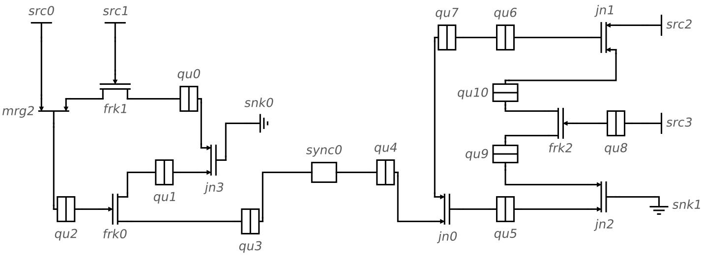
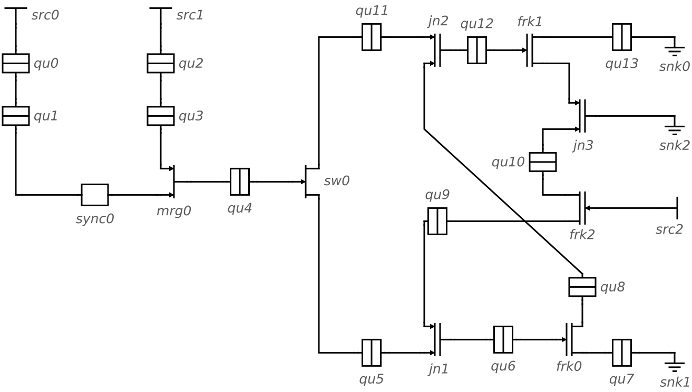
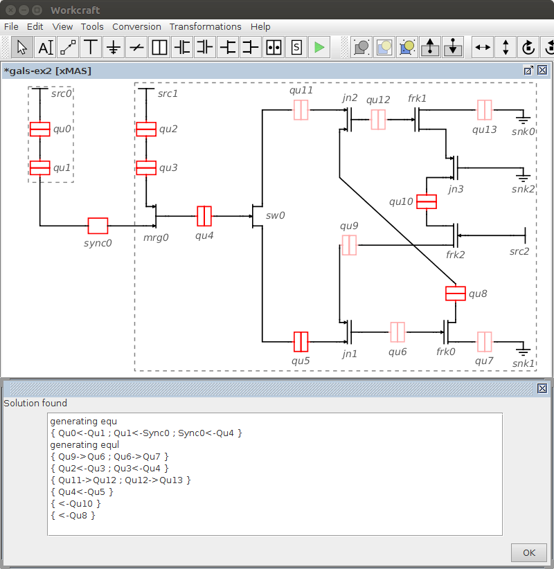
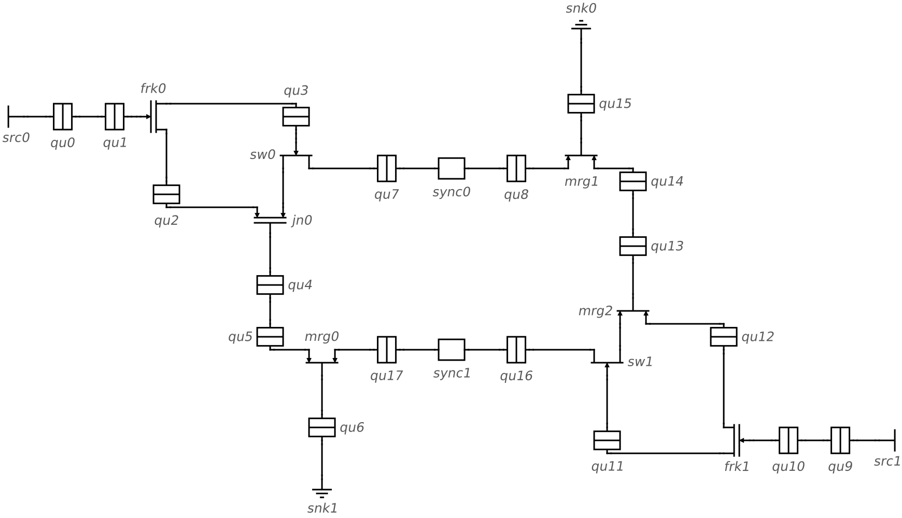

Table of Contents
Analysis and Verification of Communication Fabrics
In this tutorial we consider analysis and verification of communication fabrics using xMAS Circuit models. xMAS models are created using communication primitives which are glued together to form circuits. An additional synchroniser primitive is used for creating GALS circuits using xMAS models.
When an xMAS circuit has been constructed it can be converted into Petri net models which are passed to an external tool for verification. Verification proceeds by unfolding the Petri net models to occurrence nets followed by deadlock analysis. The verification operates at different levels: (1) a basic level which is used for finding global or local deadlocks; (2) an advanced level which analyses the relations between the deadlocked queues in terms of blocking and idleness. The tutorial starts by focussing on a basic xMAS example.
Modelling and verification using xMAS
xMAS modelling uses eight basic communication primitives.
The basic communication primitives are: Source, Sink, Function, Fork, Join, Merge, Switch, Queue. A basic model can be constructed by gluing these components together to form a communication circuit. The basic communication model is centered around queueing. An example is given below.

Download this model: circ-ex.work (4 KiB).
Load the example into Workcraft and test it using the following instructions.
Once a circuit has been constructed it can be converted into Json which is a data interchange format. This is done by selecting the Tools menu and selecting Export to Json. A description of the Json for the circuit is then generated which appears in the console.
Json output
"VARS": [],
"PACKET_TYPE": {},
"COMPOSITE_OBJECTS": [],
"NETWORK": [
{
"id": "Src0",
"type": "source",
"outs" : [
{
"id": "Mrg0",
"in_port": 0
}
]
......
After the Json has been generated it can be converted into CPNs by selecting the Tools menu followed by selecting GenerateCPN. The Control CPNs are generated which appear in the console together with an auxiliary file containing additional information required by the verification.
CPN output gensource Src0 marking p_Src0_oracle0 1 marking p_Src0_oracle1 0 p_Src0_oracle0 t_Src0_oracleplus t_Src0_oracleplus p_Src0_oracle1 p_Src0_oracle1 t_Src0_oracleminus t_Src0_oracleminus p_Src0_oracle0 marking p_Src0o_irdy0 1 marking p_Src0o_irdy1 0 p_Src0o_irdy0 t_Src0o_irdyplus t_Src0o_irdyplus p_Src0o_irdy1 p_Src0o_irdy1 t_Src0o_irdyminus t_Src0o_irdyminus p_Src0o_irdy0
For verification the verification tool is invoked by selecting the Tools menu followed by the Verification submenu. Various submenus may be selected from this. For a normal verification the Configuration submenu should be selected and when the configuration popup window appears the following configuration should be made. The Level of verification should be set to normal, the Display set to popup and the Highlight set to none. The OK button should be clicked on to save the configuration.
Verification is invoked by selecting the Tools menu followed by selecting Verification and then clicking on the Verification submenu. After deadlock analysis has finished a popup window appears showing the trace for a global deadlock.

The view of the trace may be closed by clicking on the OK button in the popup window.
To set up the configuration for an advanced level verification the Verification Configuration submenu should be selected from the Tools menu. In the configuration popup window the Level of verification should be set to advanced, the Display set to popup and the Highlight set to rel.
To initiate a verification the Tools Verification should be selected followed by clicking on the Verification submenu. After deadlock analysis has finished a popup window appears detailing relational information about the analysis. The resulting xMAS diagram highlights the blocking and idle relations between the queues. Further details about the analysis appear in the console.

To analyse a different solution an Analysis popup window may be invoked by selecting the Tools menu followed by Verification followed by the Analysis submenu.
A popup window appears displaying the number of unique solutions. These relate to different queue and
relational configurations occurring in the deadlock state. From the list of solutions the second one should be selected and accepted by clicking on the OK button.
A popup window appears detailing relational information about the analysis. The resulting xMAS diagram highlighs the new relations for the second solution.
The example has two unique solutions. These occur because of the manner in which data passes through the switches when operating in non-deterministic mode. The solutions are mirror images of each other which exist because of the symmetry in the model.
GALS modelling and verification using xMAS
For GALS xMAS models an additional primitive is used called a synchroniser. The synchroniser acts as a black-box which houses a number of possible synchronisation solutions: asynchronous, mesochronous, pausible.
A GALS circuit consists of local modules constructed from the basic communication primitives which are connected together using synchronisers. The example shown below is an example of a producer consumer pair linked together by an asynchronous synchronisation unit.

Download this model: gals-ex.work (6 KiB).
Load the example into Workcraft and test it using the following instructions.
To create local GALS modules the xMAS components should be grouped together using the selection pointer (by left clicking on the mouse and dragging to select components) and then the Group selection icon should be selected from the tool Selection controls. This is used to create two groups: one for the producer (left of the synchroniser) and one for the consumer (right of the synchroniser).
Synchronisation configuration may be achieved by selecting the Tools menu followed by the Sync and Configure submenus. A popup window will appear displaying the synchroniser name together with some configuration options. For configuration the asynchronous option should be selected from the pull down box. A 1 will automatically appear in the CLK1 edit box and a 2 should be typed in the CLK2 edit box. The configuration may be saved by clicking on the OK button.
Once the groupings have been made and synchronisation settings have been configured it can be converted into Json by selecting the Tools menu followed by Export to Json.
After the Json has been generated it can be converted into CPNs by selecting the Tools menu followed by selecting GenerateCPN. The Control CPNs are generated together with an auxiliary file containing additional information about the synchronisers required by the verification.
To set up the configuration for an advanced level verification the Verification Configuration submenu should be selected from the Tools menu. In the configuration popup window the Level of verification should be set to advanced, the Display set to popup and the Highlight set to rel.
To initiate a verification the Tools Verification should be selected followed by clicking on the Verification submenu. After deadlock analysis has finished a popup window appears detailing relational information about the analysis. The resulting xMAS diagram highlights the blocking and idle relations between the queues. Further details about the analysis appear in the console.

To find the source of deadlock a query can be made. A query may be invoked by selecting Tools Verification
followed by the Query submenu. A popup window will appear listing various options. The first of these options i.e. Sources should be selected and the pulldown list to the right set to ALL. A Query will be invoked after clicking on the OK button. The results of the Query appear in a popup window.

To validate that a valid source has been found the relations should be examined between various queues. After invoking the query popup window again the second one of the options i.e. Pt-to-pt should be selected. From the pulldown lists to the right a pair of queues appearing in the xMAS diagram should be selected. Different queries should be made by selecting the following pairs of queues [Qu0,Qu4] [Qu4,Qu7] [Qu5,Qu10] and clicking on the OK button each time.

The results show the relations which exists between the queues.
After validating the source a component can be changed in the design to correct the origin of the deadlock. Ungroup the modules using the Selection controls (select each module followed by the Ungroup selection icon), change the component Mrg2 to a Join component and reconnect the component in the diagram. Run through all the steps starting from grouping the modules all the way to verification in order to see the result.
The example has one unique deadlock source appearing inside the producer. By use of the querying it becomes clear to see that a chain of deadlock relations runs from producer to consumer resulting in complete shutdown. The solution involves changing a communication primitive which is adjacent to the source of the deadlock.
The example shown below is an example of a problem caused by synchronisation timing problems.

Download this model (COMM3): gals-ex2.work (6 KiB).
Load the example into Workcraft and test it using the following instructions.
To create local GALS modules the xMAS components should be grouped together using the selection pointer (by left clicking on the mouse and dragging to select components) and then the Group selection icon should be selected from the tool Selection controls. This is used to create two groups: one to the left of the synchroniser and one to the right of the synchroniser.
Synchronisation configuration may be achieved by selecting the Tools menu followed by the Sync and Configure submenus. A popup window will appear displaying the synchroniser name together with some configuration options. For configuration the asynchronous option should be selected from the pull down box. A 1 will automatically appear in the CLK1 edit box and a 1 will appear in the CLK2 edit box. The configuration may be saved by clicking on the OK button.
Once the groupings have been made and synchronisation settings have been configured it can be converted into Json by selecting the Tools menu followed by Export to Json. After the Json has been generated it can be converted into CPNs by selecting the Tools menu followed by selecting GenerateCPN.
In the Verification Configuration popup window the Level of verification should be set to advanced, the Display set to popup and the Highlight set to rel.
To initiate a verification the Tools Verification should be selected followed by clicking on the Verification submenu. After deadlock analysis has finished a popup window appears detailing relational information about the analysis. The resulting xMAS diagram highlights the blocking and idle relations between the queues.

Edit the xMAS circuit. Delete the synchroniser and make a link directly from Q1 to the merge. Convert it into Json by selecting the Tools menu followed by Export to Json and convert this into CPNs by selecting the Tools menu followed by selecting GenerateCPN. An attempt to repeat the verification should be made. The circuit without the synchroniser will appear to be deadlock free.
Now reconnect the synchroniser between Q1 and the merge. Reconfigure the synchronisation in the Synch Configuration popup window and change the synchroniser to mesochronous. Convert it into Json by selecting the Tools menu followed by Export to Json and convert this into CPNs by selecting the Tools menu followed by selecting GenerateCPN. An attempt to repeat the verification should be made. The circuit will also appear to be deadlock free.
A deadlock appears in the asynchronous synchroniser because of timing mismatch due to setup and potential synchronisation problems resulting in downstream functional errors. The same problem does not occur if the synchroniser is removed or it is replaced by a mesochronous synchroniser.
Exercise 1: xMAS example
For this exercise an Agent example will be used. The example for this is shown below and comprises two communicating agents communicating accross a mesochronous division.

Download this model (GLOC2): gals-ex1.work (7 KiB).
Load the example into Workcraft and attempt to complete the instructions in the exercise.
To create local GALS modules the xMAS components should be grouped together using the selection pointer (click and drag around components) and then the Group selection icon should be selected from the tool Selection controls. This should be used to create two groups: one for the first agent (to the left of the synchronisers) and one for the second agent (to the right of the synchronisers). The synchronisers should appear in the center between the two modules.
After grouping the modules, synchronisation configuration may be achieved by selecting the Tools menu followed by the Sync and Configure submenus. A popup window will appear displaying the synchronisers together with configuration options. For configuration the mesochronous option should be selected from the pull down box. A 1 will automatically appear in the CLK1 edit box and a 1 will automatically appear in the CLK2 edit box. Both synchronisers should be configured in this manner.
Once the groupings have been made and synchronisation settings have been configured it can be converted into Json by selecting the Tools menu followed by Export to Json.
After the Json has been generated it should be converted into CPNs by selecting the Tools menu followed by selecting GenerateCPN. The Control CPNs are generated together with an auxiliary file containing additional information about the synchronisers required by the verification.
The configuration should be set for an advanced level verification by selecting configure from the verification menu. In the verification configuration popup window the Level of verification should be set to advanced, the Display set to popup and the Highlight set to rel.
To initiate a verification the Tools Verification should be selected followed by clicking on the Verification submenu. After deadlock analysis has finished a popup window will appear detailing relational information about the analysis. The resulting xMAS diagram should be examined to observe the different blocking and idle relations between the queues. For the agent example only partial shutdown occurs. Blocking and idle relations are only displayed in the diagram where deadlock occurs. The remaining queues which are deadlock free appear in green.
To find the source of deadlock a query should be made by selecting Tools Verification
followed by the Query submenu. In the popup window the first option i.e. Sources should be selected and the pulldown list to the right set to ALL. After clicking on the OK the results of the Query will appear in a popup window.
To validate a valid source has been found the relations should be examined between various queues. After invoking the query popup window again the second one of the options i.e. Pt-to-pt should be selected. From the pulldown lists to the right a pair of queues appearing in the xMAS diagram should be selected. Different queries should be made by selecting the following pairs of queues [Qu2, Qu0] [Qu2,Qu5] [Qu2,Qu8] and clicking on the OK button each time.
After validating this is the correct source to complete the exercise try to work out which component can be changed in the design that is adjacent to the source of the deadlock to correct it. Ungroup the modules using the tool Selection controls, change one of the components in the diagram and run through all the steps starting from grouping the modules all the way to verification to see if you can find a correct solution.
Other Examples
- COMM1
- Download: gals-ex3.work (5 KiB).
- Synchronisation configuration: [asynchronous, clk=1, clk=2]
- COMM2
- Download: gals-ex4.work (6 KiB).
- Synchronisation configuration:
- [asynchronous, clk=1, clk=2]
- [asynchronous, clk=2, clk=1]
- GLOC3
- Download: gals-ex5.work (7 KiB).
- Synchronisation configuration:
- [asynchronous, clk=1, clk=1]
- [asynchronous, clk=1, clk=1]
- [asynchronous, clk=1, clk=1]
- [asynchronous, clk=1, clk=1]